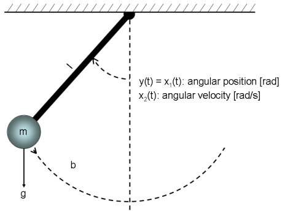
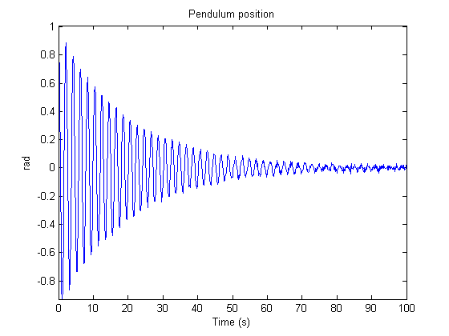
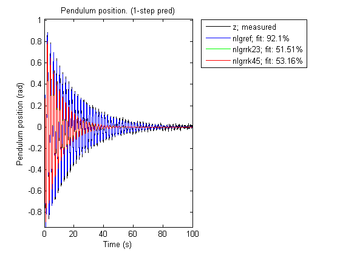
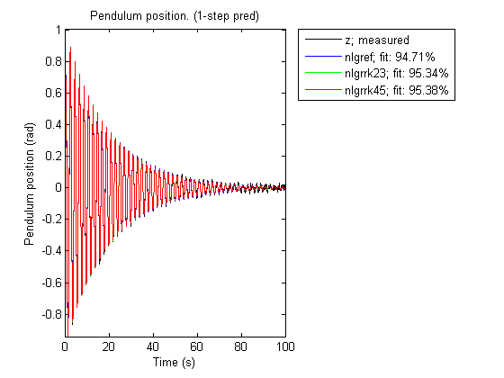

A Classical Pendulum: Some Algorithm-Related Issues
In this tutorial we investigate data produced by a nonlinear pendulum system, which is schematically shown in Figure 1. It is in particular illustrated how the choice of differential equation solver may impact the estimation result.

Figure 1: Schematic view of a classical pendulum.
Contents
Output Data
We start our modeling tour by loading the output data (time-series data). The data contains one output, y, which is the angular position of the pendulum [rad]. The angle is zero when the pendulum is pointing downwards, and it is increasing anticlockwise. There are 1001 (simulated) samples of data points and the sampling interval is 0.1 seconds. The pendulum is affected by a constant gravity force, but no other exogenous force affects the motion of the pendulum. To investigate this situation, we create an IDDATA object:
load(fullfile(matlabroot, 'toolbox', 'ident', 'iddemos', 'data', 'pendulumdata')); z = iddata(y, [], 0.1, 'Name', 'Pendulum'); set(z, 'OutputName', 'Pendulum position'); set(z, 'OutputUnit', 'rad'); set(z, 'Tstart', 0, 'TimeUnit', 's');
The angular position of the pendulum (the output) is shown in a plot window.
figure('Name', [z.Name ': output data']); plot(z); axis('tight');
Figure 2: Angular position of the pendulum (output).
Pendulum Modeling
The next step is to specify a model structure for the pendulum system. The dynamics of it has been studied in numerous books and articles and are well understood. If we choose x1(t) as the angular position [rad] and x2(t) as the angular velocity [rad/s] of the pendulum, then it is rather straightforward to set up a state-space structure of the following kind:
d/dt x1(t) = x2(t) d/dt x2(t) = -(g/l)*sin(x1(t)) - (b/(m*l^2))*x2(t)
y(t) = x1(t)
having parameters (or constants)
g - the gravity constant [m/s^2] l - the length of the rod of the pendulum [m] b - viscous friction coefficient [Nms/rad] m - the mass of the bob of the pendulum [kg]
We enter this information into the MATLAB file pendulum_m.m, with contents as follows:
function [dx, y] = pendulum_m(t, x, u, g, l, b, m, varargin) %PENDULUM_M A pendulum system.
% Output equation. y = x(1); % Angular position.
% State equations.
dx = [x(2); ... % Angular position.
-(g/l)*sin(x(1))-b/(m*l^2)*x(2) ... % Angular velocity.
];The next step is to create a generic IDNLGREY object for describing the pendulum. We also enter information about the names and the units of the inputs, states, outputs and parameters. Owing to the physical reality all model parameters must be positive and this is imposed by setting the 'Minimum' property of all parameters to the smallest recognizable positive value in MATLAB®, eps(0).
FileName = 'pendulum_m'; % File describing the model structure. Order = [1 0 2]; % Model orders [ny nu nx]. Parameters = [9.81; 1; 0.2; 1]; % Initial parameters. InitialStates = [1; 0]; % Initial initial states. Ts = 0; % Time-continuous system. nlgr = idnlgrey(FileName, Order, Parameters, InitialStates, Ts, ... 'Name', 'Pendulum'); set(nlgr, 'OutputName', 'Pendulum position', ... 'OutputUnit', 'rad', ... 'TimeUnit', 's'); setinit(nlgr, 'Name', {'Pendulum position' 'Pendulum velocity'}); setinit(nlgr, 'Unit', {'rad' 'rad/s'}); setpar(nlgr, 'Name', {'Gravity constant' 'Length' ... 'Friction coefficient' 'Mass'}); setpar(nlgr, 'Unit', {'m/s^2' 'm' 'Nms/rad' 'kg'}); setpar(nlgr, 'Minimum', {eps(0) eps(0) eps(0) eps(0)}); % All parameters > 0.
Performance of Three Initial Pendulum Models
Before trying to estimate any parameter we simulate the system with the guessed parameter values. We do this for three of the available solvers, Euler forward with fixed step length (ode1), Runge-Kutta 23 with adaptive step length (ode23), and Runge-Kutta 45 with adaptive step length (ode45). The outputs obtained when using these three solvers are shown in a plot window.
% A. Model computed with first-order Euler forward ODE solver. nlgref = nlgr; nlgref.Algorithm.SimulationOptions.Solver = 'ode1'; % Euler forward. nlgref.Algorithm.SimulationOptions.FixedStep = z.Ts*0.1; % Step size. % B. Model computed with adaptive Runge-Kutta 23 ODE solver. nlgrrk23 = nlgr; nlgrrk23.Algorithm.SimulationOptions.Solver = 'ode23'; % Runge-Kutta 23. % C. Model computed with adaptive Runge-Kutta 45 ODE solver. nlgrrk45 = nlgr; nlgrrk45.Algorithm.SimulationOptions.Solver = 'ode45'; % Runge-Kutta 45. figure; compare(z, nlgref, nlgrrk23, nlgrrk45, 1, 'init', 'm');
Figure 3: Comparison between true output and the simulated outputs of the three initial pendulum models.
As can be seen, the result with the Euler forward method (with a finer grid than what is used by default) differs significantly from the results obtained with the Runge-Kutta solvers. In this case, it turns out that the Euler forward solver produces a rather good result (in terms of model fit), whereas the outputs obtained with the Runge-Kutta solvers are a bit limited. However, this is somewhat deceiving, as will be evident later on, because the initial value of b, the viscous friction coefficient, is twice as large as in reality.
Parameter Estimation
The gravitational constant, g, the length of the rod, l, and the mass of the bob, m, can easily be measured or taken from a table without estimation. However, this is typically not the case with friction coefficients, which often must be estimated. We therefore fix the former three parameters to g = 9.81, l = 1, and m = 1, and consider only b as a free parameter:
setpar(nlgref, 'Fixed', {true true false true}); setpar(nlgrrk23, 'Fixed', {true true false true}); setpar(nlgrrk45, 'Fixed', {true true false true});
Next we estimate b using the three differential equation solvers. We start with the Euler forward based model structure.
tef = clock; nlgref = pem(z, nlgref, 'Display', 'Full'); % Perform parameter estimation. tef = etime(clock, tef);
Criterion: Trace minimization
Scheme: Trust-Region Reflective Newton (LSQNONLIN, LargeScale = 'On')
--------------------------------------------------------------
Norm of First-order
Iteration Cost step optimality
--------------------------------------------------------------
0 0.000308997 - -
1 0.000138513 0.0151 0.621
2 0.000138426 0.000139 0.00485
3 0.000138426 1.09e-006 3.13e-005
--------------------------------------------------------------
Then we continue with the model based on the Runge-Kutta 23 solver (ode23).
trk23 = clock; nlgrrk23 = pem(z, nlgrrk23, 'Display', 'Full'); % Perform parameter estimation. trk23 = etime(clock, trk23);
Criterion: Trace minimization
Scheme: Trust-Region Reflective Newton (LSQNONLIN, LargeScale = 'On')
--------------------------------------------------------------
Norm of First-order
Iteration Cost step optimality
--------------------------------------------------------------
0 0.0116325 - -
1 0.00132664 0.196 5.83
2 0.000110248 0.056 0.325
3 0.000107555 0.0025 0.00322
4 0.000107555 2.45e-005 2.99e-005
--------------------------------------------------------------
We finally use the Runge-Kutta 45 solver (ode45).
trk45 = clock; nlgrrk45 = pem(z, nlgrrk45, 'Display', 'Full'); % Perform parameter estimation. trk45 = etime(clock, trk45);
Criterion: Trace minimization
Scheme: Trust-Region Reflective Newton (LSQNONLIN, LargeScale = 'On')
--------------------------------------------------------------
Norm of First-order
Iteration Cost step optimality
--------------------------------------------------------------
0 0.0108567 - -
1 0.00093509 0.188 5.28
2 0.000105655 0.0455 0.0991
3 0.000105438 0.000694 0.00186
4 0.000105438 4.13e-007 3.51e-007
--------------------------------------------------------------
Performance of Three Estimated Pendulum Models
The results when using these three solvers are summarized below. The true value of b is 0.1, which is obtained with ode45. ode23 returns a value quite close to 0.1, while ode1 returns a value quite a distance from 0.1.
disp(' Estimation time Estimated b value'); fprintf(' ode1 : %3.1f %1.3f\n', tef, nlgref.Parameters(3).Value); fprintf(' ode23: %3.1f %1.3f\n', trk23, nlgrrk23.Parameters(3).Value); fprintf(' ode45: %3.1f %1.3f\n', trk45, nlgrrk45.Parameters(3).Value);
Estimation time Estimated b value ode1 : 4.1 0.193 ode23: 1.7 0.093 ode45: 2.8 0.100
However, this does not mean that the simulated outputs differ that much from the actual output, because the errors produced by the different differential equation solvers are typically accounted for in the estimation procedure. This is a fact that readily can be seen by simulating the three estimated pendulum models.
figure; compare(z, nlgref, nlgrrk23, nlgrrk45, 1, 'init', 'm');
Figure 4: Comparison between true output and the simulated outputs of the three estimated pendulum models.
As expected given this figure, the Final Prediction Error (FPE) criterion values of these models are also rather close to each other:
fpe(nlgref, nlgrrk23, nlgrrk45);
1.0e-003 *
0.1387 0.1078 0.1056
Based on this we conclude that all three models are able to capture the pendulum dynamics, but the Euler forward based model reflects the underlying physics quite poorly. The only way to increase its "physics" performance is to decrease the step length of the solver, but this also means that the solution time increases significantly. Our experiments indicate that the Runge-Kutta 45 solver is the best solver for non-stiff problems when taking both accuracy and computational speed into account.
Conclusions
The Runge-Kutta 45 (ode45) solver often returns high quality results relatively fast, and is therefore chosen as the default differential equation solver in IDNLGREY. "idprops idnlgrey algorithm" provides some more details about the available solvers and estimation algorithms that can be used for IDNLGREY modeling.
Additional Information
For more information on identification of dynamic systems with System Identification Toolbox™ visit the System Identification Toolbox product information page.